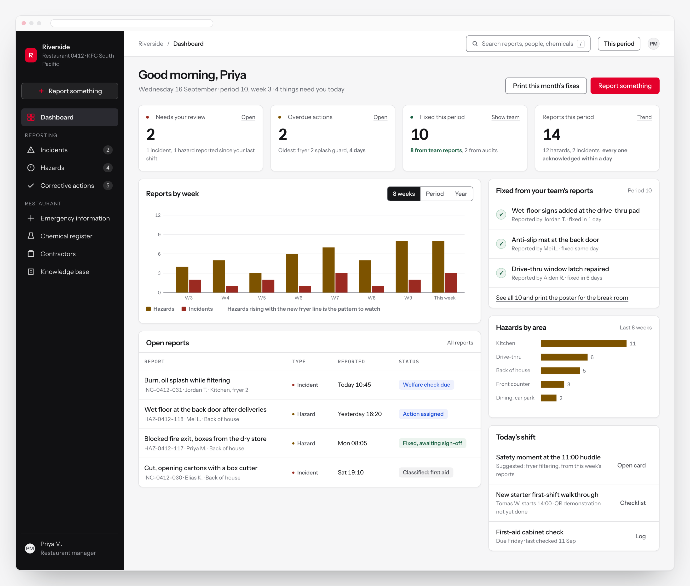
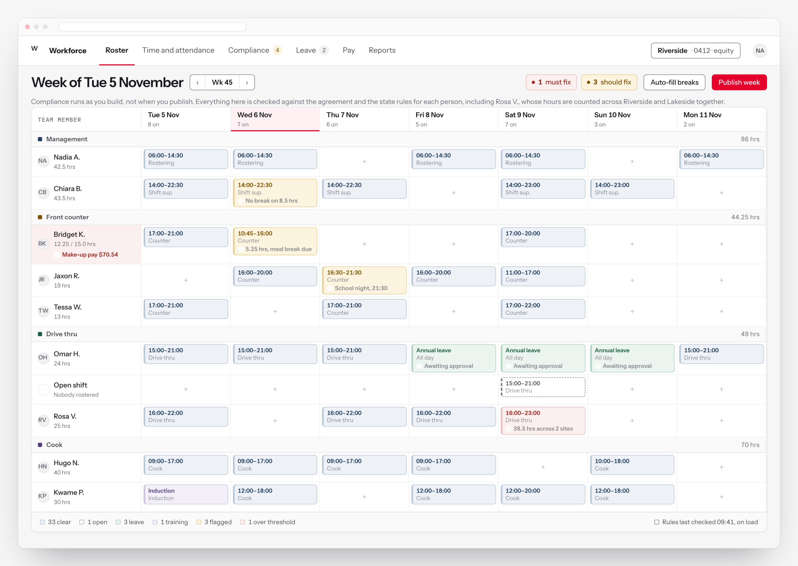
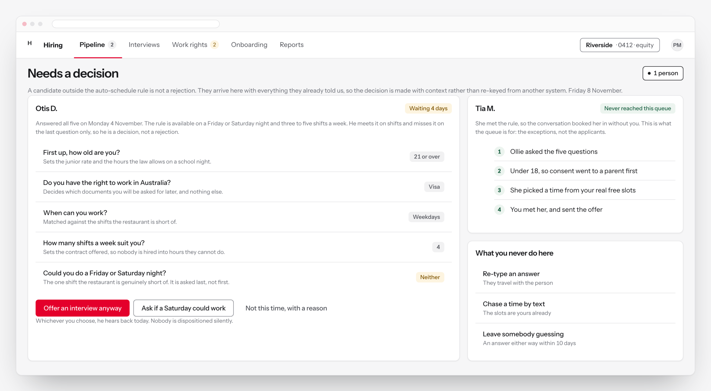
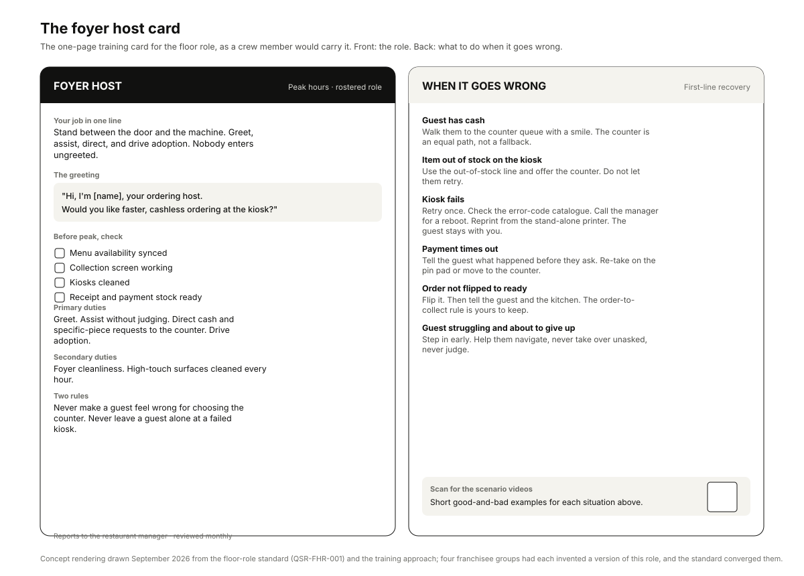
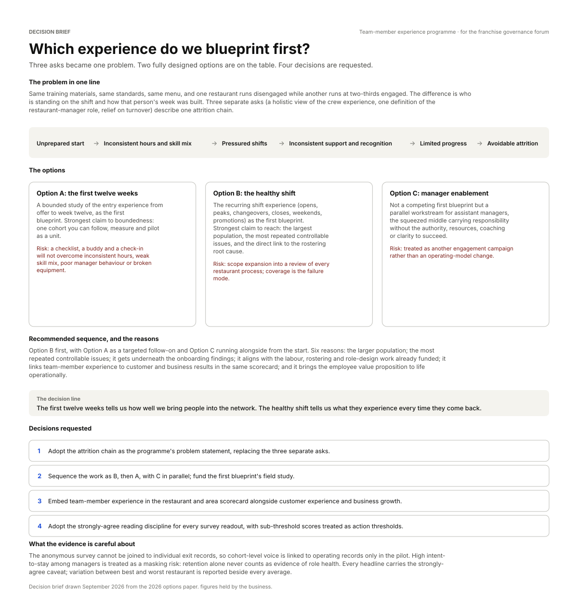

Experience Designer · KFC South Pacific · Sydney
I design how operational services work for the people who run them, across a network of several hundred restaurants.
I run the interviews and the user testing, map services as multi-lane blueprints, facilitate the workshops where priorities get decided, and build the internal tools that keep the evidence within reach. I use AI in that work every day, behind a human review gate.
Lead case · Safety and compliance reporting · 2025
Transforming safety and compliance reporting across a restaurant network
The business assumed location explained why some restaurants reported more incidents than others. I chose the sample to test that. Location did not predict it. The manager did, and the recommendations changed to match.
- Research
- 232 insight records from interviews, a team survey, restaurant visits and two form walkthroughs across eight restaurants, each one tied to the stage of the service where it happens.
- Output
- A five-stage blueprint across 184 items, three proposals with working prototypes, a ten-module product design, and the insight tool itself: 50 routes, 318 commits, still the evidence base the team works from.
- Delivered
- Into the live reporting programme in December 2025: findings report, blueprint, roadmap and form prototypes. Implementation sits with the platform, safety and training teams. The tool replaced a board estimated at about 37 hours to place and rebuild by hand.

Ten modules on one design system, each screen annotated with the research finding that drove the decision. Open the product, module by module.
Lead case · Rostering, time and attendance · 2024
Transforming rostering, time and attendance across a billion-dollar restaurant business
Every restaurant ran on the same platform and nobody could agree what to fix first. 175 pain points, only 41 per cent of them a software problem. The platform did not need more features. It needed a compliance layer people could work inside.
- Research
- Ten restaurant visits across franchise and equity sites, 200 field survey responses, and an above-restaurant round with a franchisee, two area coaches and payroll
- Output
- A four-lane blueprint across seven stages, four personas, two worked journeys, a scored top ten, and a nine-module product design.
- Shipped
- Eight of the scored ten carried a named release within the year, and ten further releases landed in early 2026. The blueprint runs on a half-yearly review.

Nine modules on the same design system, each screen answering a pain point from the research. Open the product, module by module.
Lead case · Hiring and onboarding · 2025
Redesigning hiring and onboarding for a restaurant network
The business had a labour-market theory: the jobs were hard to fill because the market was tight. The research pointed at its own process. Five of the seven moments that matter failed, and the wait for a first human touch ran from days to weeks.
- Research
- Interviews with managers and candidates across the network, mapped onto nine stages from finding the job to a first shift, with every failing moment named and given a verdict.
- Output
- A nine-stage blueprint, a competency framework for the manager pipeline, and a ten-module product design: seven screens for the candidate, three for the manager.
- Delivered
- A screening-to-interview workflow specification with human lanes, where nothing is auto-rejected and every candidate gets an answer within ten days. Implementation sits with technology and the platform vendor.

Ten modules on the same design system, seven of them met by a sixteen year old applying for a first job. Open the product, module by module.
Selected work
All seven projects
Self-service channelDesigning the human half of self-service ordering
A floor role, a placement standard and the training that came with them, for a channel that had reached about half the network while its operating model stood still.
Led the design work Drive-thru
Drive-thru
Keeping the human moment in an AI-run drive-thru
A voice-AI order taker removed the one human moment the channel always guaranteed. Four touchpoints named and trained, a hospitality ritual written for each, and two sequenced pilots designed to test them.
Led the design work
Employee experienceDesigning the first twelve weeks of a restaurant career, network-wide
Three separate asks synthesised into one attrition chain, two blueprint options held in deliberate tension, and a decision brief a franchise governance forum could settle in one meeting.
Led the design work Service quality
Service quality
Shifting a service-quality programme from speed to competence
Years of optimising one number while guests kept complaining. Read as one dataset the complaints were about execution, so the taxonomy proved it and the observation instrument and recognition ladder put it on the floor.
Led the design workWhat I do
Four role families, one practice
Research that reaches a decision
Interviews, user testing, surveys and site visits, designed so the sample can answer the question. In the safety work I chose restaurants to test whether location explained reporting differences. The manager explained them, and that changed what we recommended.
Service blueprints and the workshops around them
Multi-lane blueprints that show what the worker, the manager, the back office and the system each do at every step, and workshops where stakeholders argue about the map instead of each other. I lead and co-lead this work.
Prioritisation people accept
Turning a hundred pain points into a ranked list with the evidence attached, so a vendor negotiation or a roadmap conversation starts from the same page.
Applied AI, with the gates described
Four things I can show a recruiter, in the order they were built.
- DailyAI across research synthesis, coding and writing, with the prompt kept alongside its output.
- BuiltAn internal tool that extracts and classifies insights from transcripts, with schema validation, git checkpoints and every record reviewed before it counts.
- GatedA critic that runs as a separate process with a one-use token, so the thing that drafts is never the thing that approves.
- ShippedA ten-module product on a token-based design system, with a contrast script and a lint gate that fail the build.
Library
The book and the open tooling behind it, on running service design with AI agents, sit in the Library.